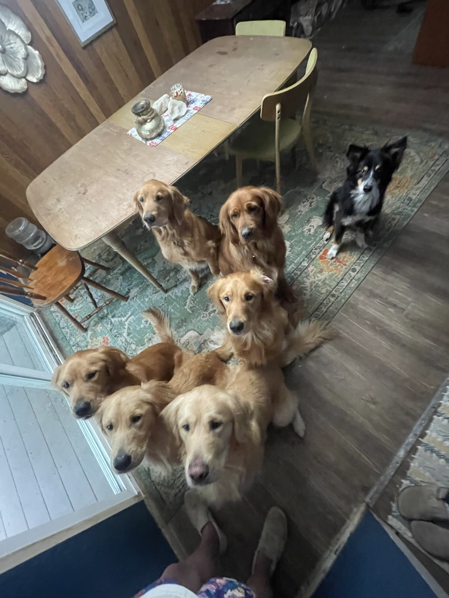
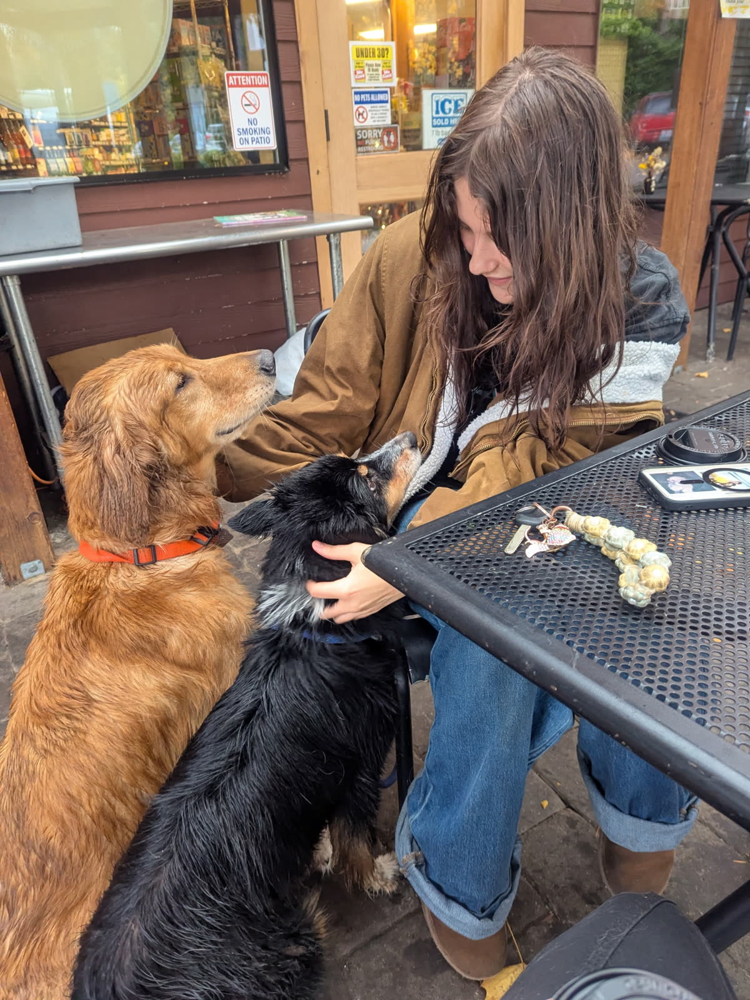

Dog walking & pet sitting for Eugene dogs.
Chuck & Co. Pet Care gives your dog a familiar face, a real walk and a routine that holds up to Eugene weather. Walks, drop-ins, overnights, puppy care, rides and trail days.
- Locally owned
- Rain or shine
- Photo updates every visit

Care that fits your dog’s day
Six services, one standard: reliable, attentive and local.
 01
01Dog Walking
Neighborhood walks with the same familiar walker, rain or shine.
Learn more → 02
02Drop-In Visits
Quick, thorough check-ins for potty breaks, meals, meds and play.
Learn more → 03
03Overnight Pet Sitting
A trusted sitter stays in your home so your dog keeps their routine.
Learn more → 04
04Puppy Visits
Potty breaks, meals, play and gentle reinforcement for growing pups.
Learn more → 05
05Pet Taxi
Safe rides to the vet, groomer, daycare and back home.
Learn more → 06
06Adventure Hikes
Leashed trail outings on Eugene’s best dog-friendly paths.
Learn more →
Simple to start. Easy to keep.
No apps to learn and no strangers at the door. Just a local team that gets to know your dog.
Request
Tell us about your dog and schedule using the form. We reply within one business day.
Meet & greet
A free visit in your home to meet your dog, learn the routine and set up keys.
Ongoing care
The same familiar face, plus a photo and note after every visit.

Named for Chuck.
Chuck & Co. is run by co-founders McKenna and Nora, and named for Chuck Norris, McKenna’s best friend and the runt of the litter who turned out to have the biggest place in her heart.
Through this business, I hope to give other dogs the same love and care I gave Chuck.McKenna, co-founder
The details that make care feel easy
Locally owned in Eugene
We live here, walk here and know these neighborhoods. You are working with a local business, not an app.
One familiar face
We keep your dog with the same small team so they build trust and you build a relationship.
Updates every visit
A photo and short note after each visit so you always know how your dog is doing.
Meet & greet first
Every new client starts with a free meet & greet in your home before any booking.
Rain-or-shine reliability
Eugene weather does not cancel walks. We plan for wet, hot and smoky days.
Across Eugene, block by block
From Santa Clara to Fox Hollow, find care in your neighborhood.
- Downtown 97401
- Whiteaker 97402
- West University 97401
- Fairmount 97403
- Laurel Hill Valley 97403
- College Hill 97405
- Friendly Area 97405
- Jefferson Westside 97402
- South Eugene 97405
- Southeast Neighbors 97405
- Crest Drive 97405
- Southwest Hills 97405
- Churchill 97405
- Far West 97402
- Bethel 97402
- Trainsong 97402
- River Road 97404
- Santa Clara 97404
- Cal Young 97401
- Goodpasture Island 97401
- Ferry Street Bridge 97401
- Willakenzie 97401
- Harlow 97401
- Fox Hollow 97405
Answers for Eugene dog owners
Off-Leash Dog Areas in Eugene: A Local Guide
Where dogs can run off leash in Eugene, Oregon, plus etiquette and tips for a safe visit.
Read guide →Dog-Friendly Hikes In and Near Eugene
Leash-friendly trails for dogs in Eugene: Ridgeline, Spencer Butte, Pre’s Trail, Hendricks Park and more.
Read guide →Dog Licensing and Leash Rules in Eugene and Lane County
A plain-language overview of dog licensing and leash basics for Eugene, Oregon dog owners.
Read guide →Common questions
What areas do you serve?
We serve Eugene, Oregon, including neighborhoods from Santa Clara and River Road to South Eugene, Fairmount, Bethel and Churchill.
How do I get started?
Request a free meet & greet using the form. We will reply to confirm a time that works for you.
What services do you offer?
Dog walking, drop-in visits, overnight pet sitting, puppy visits, pet taxi and adventure hikes.
How much does it cost?
Rates depend on the service, visit length and schedule. We share a clear quote after learning about your dog.
Do you walk dogs in the rain?
Yes, rain or shine. We towel your dog off afterward.
Will I get updates?
Yes, a photo and short note after every visit.
Request a free meet & greet
Tell us about your dog and what you need. We reply within one business day.
- Free, no-obligation meet & greet
- Locally owned in Eugene
- Photo updates after every visit